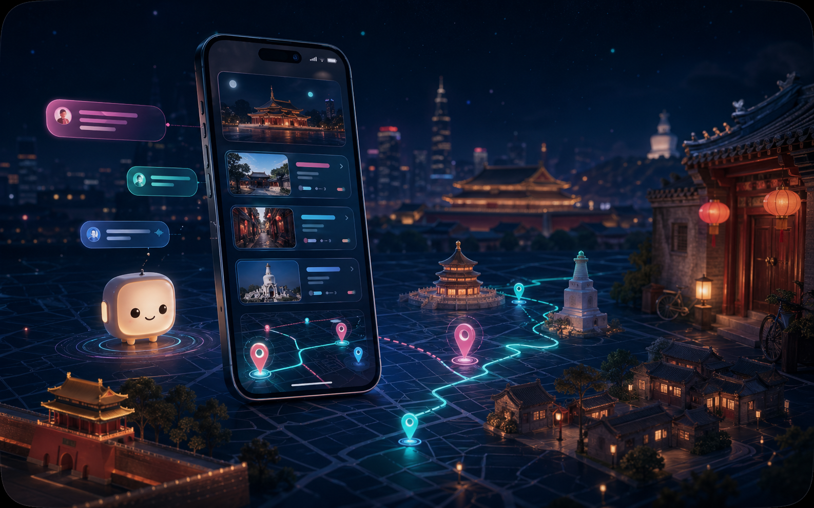
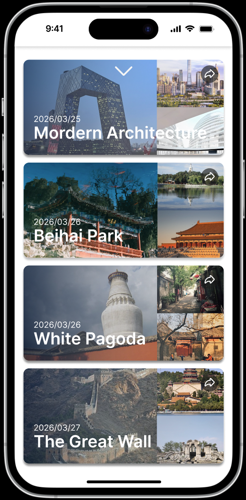
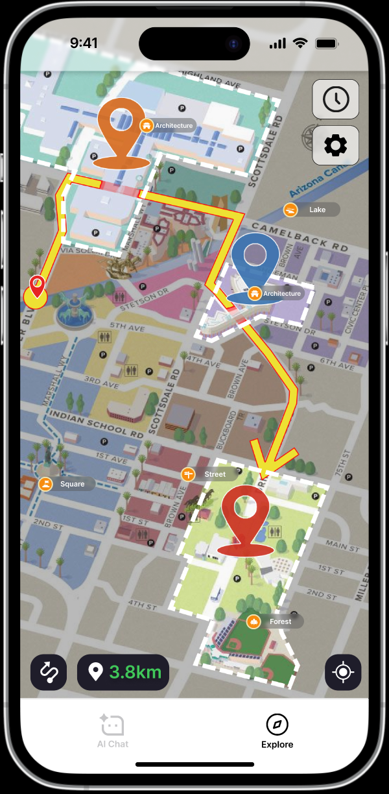
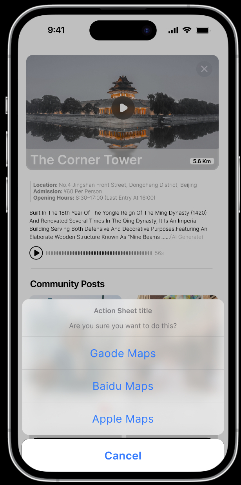

外国游客来中国旅行时，能查到景点地址，却很难快速理解文化背景、游览取舍和不同景点之间的故事关联。
Case 03 · RAG / Agent / Travel Product
东游记 AI 旅行 Story Teller
面向外国游客，用精选景点知识库、地图探索和角色化讲解，把景点从“位置和门票信息”转成可理解、可选择、可分享的文化体验。

东游记不是再做完整地图 App，而是在地图、景点卡片和对话之间增加一层“文化解释器”。
优先验证问卷画像、POI 推荐、路线生成、景点讲解和第三方地图跳转，不把真实导航和社区系统放进第一版。
Prototype
从路线选择到景点讲解
原型把“先问清偏好，再推荐路线，再在地图上探索，最后进入景点讲解和外部地图导航”串成完整旅行决策链路。
 完整原型流程白板，点击可查看原图。
完整原型流程白板，点击可查看原图。



AI Capability
把功能设计拆成四层能力
RAG、意图识别、会话记忆、多轮对话、澄清机制、数据库查询、用户画像和内容合规。
问卷收集、地图探索、POI 推荐、景点卡片、路线规划、路线变更和外部导航跳转。
自由问答、风格化回复、多语种回复、文化类比表达和内容一致性检查。
旅行报告生成、一键分享、海报生成和旅行历史存储，把一次导览沉淀成体验资产。